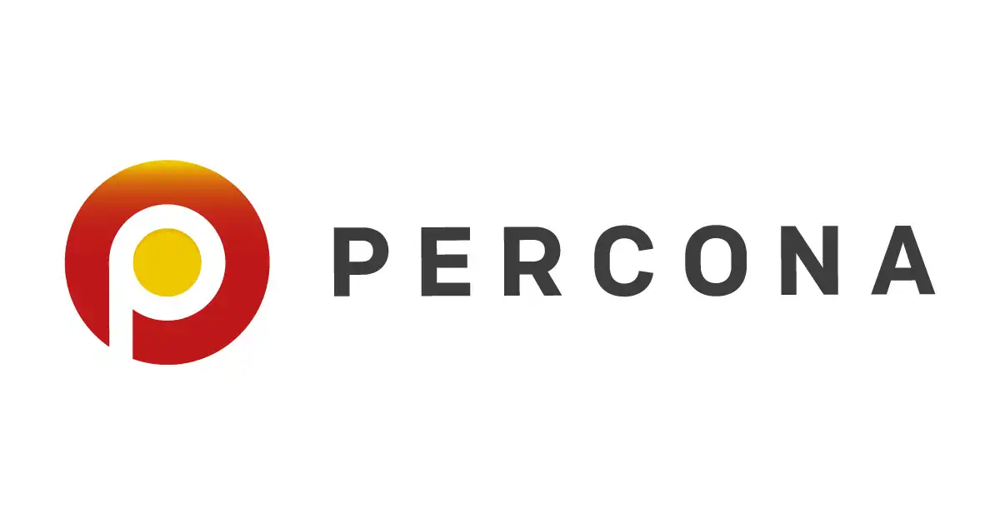
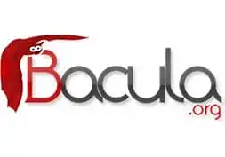
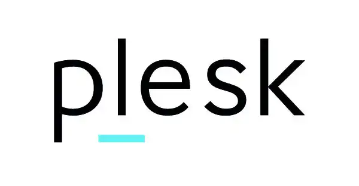

Jack O'Sullivan
IT Specialist
About Me
With nearly a decade of experience, I am an IT consultant with expertise Cloud, DevOps, Platforms, and Linux systems.
Industries I have worked in include:
- Software Development
- Data Center
- Cyber Security
- Intelligence
My work has involved both public and private sector clients.
Experience
IT Consultant
Naimuri
June 2022 - July 2023
Systems Administrator
Secarma
August 2018 - January 2022
Linux Engineer
UKFast
February 2016 - August 2018
Junior DevOps Engineer
Bright Future Software
July 2013 - February 2016
Projects
AWS > Elastic Beanstalk
Identilid
I developed a series of scripts to ensure that this project works in Elastic Beanstalk. I also created and configured the Elastic Beanstalk for the client.
Cloud Migration
Optimed

I provided assistance in migrating their existing services to a cloud-based infrastructure as well as providing assistance to development teams on the server-side component of a new product. I also conducted extensive research to find the best cloud-based solution to rendering video.
Web Development
Ostara Biomedical
I helped develop a responsive static website for a biomedical company.
Web Development > WordPress
Bright Future Software
I co-developed a WordPress theme which is used as the public facing website at Bright Future Software. I also setup and configured the hosting for the website on AWS.
AWS > Elastic Beanstalk
Social Media Metrics Dashboard
My involvement on this project was to develop a series of scripts that ensure the software we were developing could work in a load-balanced, auto-scaling environment configuration, specifically Elastic Beanstalk.
Education
Rochdale Sixth Form College
2011 - 2013
Wardle High School
2006 - 2011
Software I Use
Operating System > Linux
Red Hat Enterprise Linux

I have utilised RHEL and a number of it's derivatives such as CentOS, Fedora, and Oracle Linux in both a personal and professional capacity.
Operating System > Linux
Ubuntu
I have utilised Ubuntu, primarily as a server operating system, but also as a desktop operating system.
Terminal
BASH

BASH is the primary terminal I use, and I am very competent at bash scripting for automation.
Clustering
Pacemaker
I have built a number of active-passive clusters on bare-metal utilising Pacemaker and corosync which have been utilised extensively in production environments.
Database
Percona
Percona is a database software tool built on top of MySQL and PostgreSQL which features advanced tools for backups, high availability, and monitoring.
Backup
Bacula
I have operated and maintained large-scale backup solutions built on top of Bacula, a major open-source backup solution.
Web Server
Nginx
Nginx is one of the most popular web server solutions in the world. I have built multiple solutions utilising Nginx to power websites, load balancers, and Web Application Firewalls.
Security
NAXSI
NAXSI is a web application firewall which integrates into Nginx. I have build custom configuration for a number of different websites to protect against cross site scripting and SQL injection.
Web Server
Plesk
Plesk is a control panel for hosting websites. I have installed, managed, and maintained a large number of Plesk instances.
Web Server
cPanel
cPanel is a control panel for hosting websites. I have installed, managed, and maintained a large number of cPanel instances.